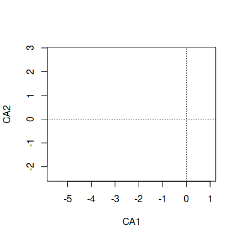
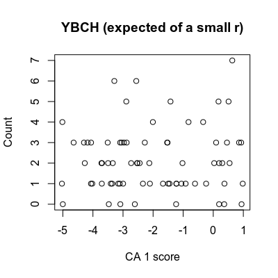
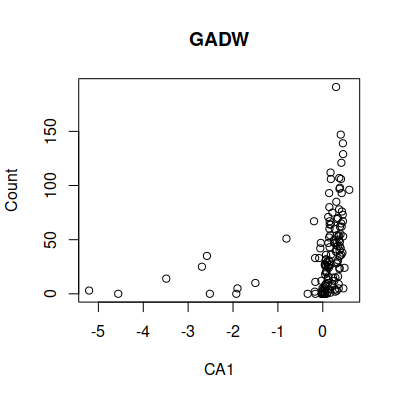

CA (correspondence analysis) and CCA (canonical correspondence analysis) are types of ordination analysis. There are many kinds of ordinations, but they all work by placing samples in order relative to a set of measured variables. CA is a type of ordination called an indirect gradient analysis, because it assumes that there is an underlying explanation for the ordering among the samples such as an ecological gradient, but CA doesn't specify what that explanation is - once CA identifies the pattern it would take additional analysis to explore the possible causes for it. You can think of CA as equivalent to principal components analysis in that it too is a method used on a single data matrix, but CA is appropriate for frequencies of categorical variables whereas PCA is best for quantitative measurements.
In contrast, CCA is a direct gradient analysis. In a direct gradient analysis we specify the variables that we expect are responsible for the pattern of turnover in species composition, and the method orders the samples along it. The gradient is specified using a series of predictor variables, which can be either numeric or categorical. The ordering in CCA is constrained to fall along the gradient specified by the predictor variables, and directly tests the hypothesis that a specific gradient is associated with the turnover in the species. CCA is similar to a MANOVA, but CCA is more appropriate for counts of discrete variables, whereas MANOVA is appropriate for measurements of numeric variables. CCA is more flexible than MANOVA, however, in that it is able to handle either categorical or numeric predictors. CCA is also able to handle the non-linear rises and falls of species abundances along a gradient that are typical of ecological data.
|
|
We will analyze bird surveys done at the San Dieguito River estuary over a twelve year period. Volunteers have been conducting monthly counts of the birds seen at the estuary since 2010, and they have kindly agreed to share their data with us for use in this class.
To prepare the data for analysis, I removed species that are not associated with aquatic habitat. I also removed species that were seen in fewer than 10 of the 120 surveys, because CA and CCA are both based on changes in relative frequencies of species, and species that are only occasionally present have a disproportionately large effect on species composition when they are detected.
The data are here , and the Rmd file for today is here - start a new R Studio project for today, and download the data and Rmd file into the project folder. You can then import the data into a data frame called birds.
If you open the birds data frame, you'll see that the first two variables are the month of the survey and the year. All of the remaining columns are a different bird species, and the numbers in the species columns are counts of the birds for each month's survey.
Most species are identified by standard American Ornithologists' Union (AOU) four letter banding codes, which are abbreviations based on the common names of the species. If the species has only one name (like Osprey) the code will be the first four letters of its name (OSPR). If the species has two words in its common name the banding code uses the first two letters of the first word and the first two letters of the second (for example American Avocet has code AMAV). Birds with more than two word names have a collection of letters from all of the words (such as Black Bellied Plover, which is coded as BBPL); the abbreviations are adjusted as needed such that every bird's code is unique (for example Herring Gull and Heermans Gull would both be abbreviated to HEGU, so Heerman's Gull is abbreviated at HEEG instead). A few species that are difficult to identify in the field have been combined into one code, such as the Western Grebe and the Clark's Grebe. For your information, a table giving the codes and common names for the birds in this data set is here.
Our analysis will be in two steps - first we will analyze the patterns of variation in species composition among the surveys using correspondence analysis, to see what the strongest patterns of variation are, without reference to any possible causes of variation. Then, we will use the same set of species, but use canonical correspondence analysis with the month and year as predictors, to explore the seasonal variation among the counts, and to see if there are predictable changes in community composition over time.
Let's start with an analysis of the patterns of association among the birds in the SDRP estuary, using correspondence analysis (CA).
1. The vegan package has the function cca(), which will compute a correspondence analysis if no predictor variables are used, and a canonical correspondence analysis if predictors are specified. We'll use it for CA first.
It will be useful to have a list of species, but there are way too many to type by hand. The only columns that do not have species data are columns 1 and 2, so we can pull out the list of species like so (make.species.list):
species <- colnames(birds)[-c(1:2)]
This command extracts the column names from birds, and the negative index attached to the colnames() function drops the first two column's names before assigning the rest to the species object.
Load vegan with the command (load.vegan):
library(vegan)
To conduct the CA, use the command (birds.ca):
cca(birds[species]) -> birds.ca
birds.ca
The output looks like this:
Call: cca(X = birds[species])
Inertia Rank
Total 2.119
Unconstrained 2.119 73
Inertia is scaled Chi-square
Eigenvalues for unconstrained axes:
CA1 CA2 CA3 CA4
CA5 CA6 CA7 CA8
0.5073 0.3051 0.2286 0.1435 0.1166 0.0930 0.0566 0.0559
(Showing 8 of 73 unconstrained eigenvalues)
Inertia is a measure of multivariate variance - Total and Unconstrained are the same here because we didn't include any predictors to constrain the axes. Just like in PCA, an axis represents a pattern of variation in the data - for data on counts of birds, each axis is a different pattern of variation in bird species composition. We get one fewer axes than we have data points (73 in this case). The eigenvalues sum to the total inertia for the data set. The output only shows the first several of them, because the amount of inertia explained declines with each axis, and since a large majority of the variation is accounted for in the first few axes it is generally not a good idea to interpret more than the first two or three axes.
2. How many CA axes should we pay attention to? We can look at the proportion of the total inertia associated with each axis with a summary() of the birds.ca object (do this first in the Console, the amount of output is huge):
summary(birds.ca)$cont$importance
This is an unwieldy list, so we can extract just the first eight CA axes by modifying this command (summary.birds.ca):
summary(birds.ca)$cont$importance[,1:8]
The summary() command produces a list with named elements, so this version of the command pulls the importance report out of the cont named element, and then just reports the importance measure for the first eight CA axes as eight columns.
You'll see that the first three axes account for about half of the variation in the data. We can get a scree plot using the command (screeplot.ca):
screeplot(birds.ca)
The plot shows us that there are pretty big drops with each axis up to the third, after which smaller, more consistent drops between bars are seen. Based on the eigenvalues, it looks like there are only three big patterns worth looking at.
3. To understand what these CA axes are telling us about variation in species composition among the surveys, we can make a biplot that places the scores for each survey on the same plot as the scores for the species. This is a little different from the biplots we have done for PCA and DFA, in that we now have scores for both of the things we want to plot, rather than scores for the samples and loadings for the variables.
The vegan package gives us a lot of control over the plot, and it's easiest to get what we want by building the plot one piece at a time. Vegan is written to use base R's graphics, rather than ggplot2, so we'll stick with base graphics here.
First, we want to make a plot with nothing but the axes showing (type = "n" means "nothing"; in chunk biplot.of.ca):
plot(birds.ca, type = "n")
You will get a blank set of axes with CA1 on the x-axis, and CA2 on the y-axis, like the graph on the left.
Next we will add points indicating the sample scores to the graph, so they will be behind the species codes. These will be the 144 individual monthly counts, which receive scores based on their species composition - points that are close together have similar species composition, and points that are far apart have different species compositions We don't need them to be individually identified, so we can add them with the command (on the next line of biplot.of.ca):
points(birds.ca, display = "sites", cex = 0.8, pch = 21, col = "gray", bg = "lightblue")
If you click on the graph you'll see it change to show this step - the light blue points with gray outlines are the monthly counts. Note that "sites" is a bit of a misnomer for these data - it is often true that species composition data is collected at sampling locations distributed among different locations, but in this case we're at the same location making repeated counts over time. A more generic name, like "samples", would fit our case better, but just bear in mind that the "sites" scores are attached to the rows in the table - they are the measures of species composition attached to each monthly count.
You'll see that the distribution is a little odd along CA1 - on the right side there seems to be an upper limit they're not going above, but the points spread out to the left - this reflects the fact that the first CA axis is dominated by a handful of species that were found in really large numbers in a few counts, which changed the species composition dramatically but only for a few counts. We'll figure out which they are, and why they are so different, after we've finished building the plot.
Next, to add the species, use the command (next line of biplot.of.ca):
orditorp(birds.ca, display = "spec", cex = 0.5, col = "red")
The orditorp() command adds text labels if they will not overlap excessively, and points if they will, so improve readability of the graph. If you click on the graph again you'll see this step now.
Species (red) that are close to a point on the graph (or at least in the same direction away from the origin) had a bigger relative frequency in that point. You can see that there is one species, BVSH (black-vented shearwater) that is located where the points are spreading out to the left - there are a few months that had a huge number of this species, and that is largely responsible for the CA1 axis.
The second axis is a little more interesting, in that it separates several species from one another, with BRAC (Brandt's cormorants) and LETE (lesser terns) located at the extremes along that axis. We would expect based on their very different CA2 scores that monthly counts that have LETE should not have many BRAC, and counts with BRAC should not have many LETE, and this is generally the case - of the 108 counts that had at least one of the species only 13 (12%) had both, whereas 89 (82%) had only BRAC and 6 (5.5%) only had LETE, for a total of 87.5% that had only one species or the other.
The other two species near LETE are also terns, the ROET (combined royal and elegant terns) and CATE (caspian terns) - it appears in general that terns are typically present when BRAC are absent, and vice versa.
4. In addition to biplots, we have been using loadings to interpret axes in the other methods we have learned. Remember that loadings are correlations between the variables (in this case, species counts) with axis scores (in this case, the site scores specifically). We can certainly calculate correlations between species and site scores, we run into a slight problem.
Remember that one of the reasons we chose to use CA instead of PCA is that CA can handle non-linear patterns. This means that the correlations between axis scores and counts of species may not indicate what we think they do. Consider these examples:
The correlation between the Yellow-Breasted Chat (YBCH) is -0.005, which tells us there is not a strong relationship between counts of YBCH and CA 1 scores - given our previous experience with correlation coefficients, we would expect the data to look like the graph on the right (the version titled "YBCH (expected of a small r)"). The counts show no predictable relationship with CA 1, such that high counts are equally likely to occur anywhere along the CA 1 axis. With a correlation of -0.005 with CA 1, it is entirely possible that this is how the YBCH are distributed along CA 1.
But, if you click on the graph it changes to the actual counts of YBCH, and you'll see that the reality is quite different from what we expected. The largest counts of YBCH tend to occur at a CA1 score of around 0. Large counts don't happen often as you move right or left from 0, and we would expect the bird community to be missing YBCH for most of the samples with scores that are either close to the maximum or minimum values of CA 1 - the few exceptions with large counts in samples with large negative CA 1 scores are responsible for the weak negative correlation between YBCH counts and CA 1 scores, but you can see this is not the dominant pattern in the YBCH data. This is an example of the kind of non-linear response to a gradient that we covered in the lecture - YBCH start at low abundance, rise to a peak, and decline again along the gradient.
In other words, there is actually a fairly strong relationship between YBCH counts and CA 1 scores, it's just not a linear one. This may be common - if the underlying gradient is long there may be completely different species in the middle of the CA axis than at either end, and those species will all be like YBCH, with low loadings due to a strong, but non-linear, relationship with CA1.
Click one more time and you'll see the graph for the great blue heron (GRBH), which has a low correlation with CA1, just like YBCH does, but this time it's because GRBH are present in moderate numbers most of the time - the low correlation is because they are a fairly unchanging presence at the site, and are part of community at either end of CA1. Unlike the YBCH, GRBH have a low correlation because they are nearly always present in the counts every month, and don't contribute much to changes in species composition.
Loadings near 0 are thus difficult to interpret in CA, because a small correlation could indicate either a lack of relationship (like the first version of the graph), or a strong relationship that is just not a linear relationship (like the second, actual version of the graph). We really need to look at the graph of species counts against scores to put loadings that are near 0 in the proper context. The species that will fall into this group often have CA1 scores that are close to the center
Compare the YBCH example with what we see in cases of strong positive or negative correlation between bird counts and scores. The graph on the right shows the relationship between Gadwall counts (a species of duck) and CA 1 scores; Gadwall have one of the highest positive correlation with CA 1, with r = 0.28. You can see that there is a positive trend in numbers as you move from left to right on the graph, so the correlation coefficient is telling us something that is true about gadwalls.
If you click on the graph you'll switch to a graph of Black-vented Shearwaters, which have the largest negative correlation between their counts and CA 1 scores, r = -0.89. The graph of BVSH also clearly shows a trend, and the trend is negative like the correlation coefficient indicates.
Based on these examples, we should expect that big loadings are going to be simpler to interpret than small loadings - we should consider the possibility that species with small loadings still have a strong, but non-linear, relationship with a CA axis due to their presence in high numbers in the middle of the gradient represented by the CA axis, rather than because of a lack of relationship with the CA axis.
So, we should calculate loadings, but should be careful about interpreting loadings that are close to 0, since species with loadings near 0 could either be present nearly all the time, be present or absent at random, or could be strongly associated with a CA axis but not in a linear way.
To calculate the correlations, we need to get the CA 1 scores. We can calculate these with (ca1.scores):
scores(birds.ca, display = "sites", choices = c(1)) -> birds.ca1
Next, we can correlate all of the birds with these scores (correlate.counts.ca1):
cor(birds[species], birds.ca1) -> birds.ca1.cor
You should have a new object in your Environment called birds.ca1.cor that has the correlations between counts and CA 1 scores in it. Click on this object to view it, and then click on the CA1 column (twice) to sort the correlations from largest to smallest. If you look at the species that are at the ends (strong positive or strong negative) compared with those in the middle (weak correlations, either positive or negative) you'll see that the species at the right and left edges of the biplot are also those that have strong positive and negative correlations. Species that are close to 0 on the x-axis have low correlations.
You'll see that the species with the strongest positive correlations with CA 1 are GADW (which is already plotted in the blockquote above), BUFF (buffleheads, another duck species), EAGR (eared grebe), and so on. If you scroll to the bottom of the sorted list where the strong negative correlations are found, you'll see BVSH (also plotted above already), ELTE (elegant tern), HEEG (Heerman's gull), and so on. In the middle of the list are species with correlations near 0, including COLO (common loon), BRPE (brown pelican), and so on. To help us interpret the correlations, we can plot one of each of these species (chunk plot.sp.ca1).
par(mfrow = c(1,3))
plot(birds$BUFF ~ birds.ca1, xlab = "CA 1", ylab = "Count", main = "BUFF, r = 0.29")
plot(birds$BVSH ~ birds.ca1, xlab = "CA 1", ylab = "Count", main = "BVSH, r = -0.89")
plot(birds$BRPE ~ birds.ca1, xlab = "CA 1", ylab = "Count", main = "BRPE, r = -0.04")
You'll see that bufflehead counts tend to be highest above CA1 scores of 0 (hard to see, admittedly, given how much more spread out the scores are in the negative direction). The shearwaters show a convincing negative relationship, as we saw above. The pelicans look fairly random - the counts are quite variable (up to more than 250 birds in a count), but fairly large counts happen here and there along CA1 - this species is more like the GRBH example than the YBCH example above.
We could repeat this set of steps for all of the species, and then repeat for CA 2 and CA 3, but hopefully you get the idea - a combination of numeric and graphical approaches help us understand the overall patterns across the entire data set (i.e. biplots), and help us understand the patterns with respect to individual species that are at the ends of the axes, or in the middle of them (i.e. scatterplots of scpecies counts against site scores).
Birds migrating through the region in the spring and fall should cause seasonal changes in species composition at the SDRP. Some of the species found there are year-round residents, meaning that they both breed and winter in the region. Some species have a mix of the two - there will be a contingent of individuals that stay around all year and breed there, and other individuals of the same species just move through, such that the counts don't ever drop to zero, but they peak during the fall and spring migrations. Others, like BVSH and BRAC, are usually found further offshore and only occasionally (and unpredictable) use the estuary - their numbers vary substantially, but they may or may not show much of a seasonal pattern.
Understanding the patterns in a big, multivariate data set like this is no small problem. I've made circular plots that show the scaled abundance of each species (i.e. each count divided by the maximum seen for the species), which are all here. Graphs like these are great for getting an idea of what the basic patterns are, and to help with interpretation of the multivariate results once we have them, but the graph has way too much information... we really need a multivariate analysis to help us wrap our brains around which species have similar seasonal patterns and which are different. Based on the circular plots, though, you can at least see that some species are present all year round, and thus have red bars of about the same height in every month. Others are only present for awhile, and have all of their red concentrated in a few months. Others are present year round, but have a season or two in which they increase in number. Still others (like BVSH) are super abundant occasionally, but at low levels or completely absent for the rest of the year.
If we want to understand how seasonal variation affects the community composition, we run into a problem...our months are an example of a circular variable, which repeats each year. If we number the months from 1 to 12 and sort them in order we end up with the first month (January) being maximally far away from the last month (December), even though January follows immediately after December. The numbering of the months is arbitrary, so we can start from wherever we want, but wherever we choose to start we will just move the problem to that new starting and ending place.
A better solution is to use two variables that together can identify the month without having any artificial breaks. If you look at the circular plots, it's easy to see that we could treat each month as an angle on a circle, with each month at 1/12 of the way around, such that:
But we haven't solved the problem yet, because if we just used the angles we would still put Dec and Jan are at
opposite ends of the degree scale. We can solve this by representing these angles as two numbers, the sin of the
angle and the cos of the angle. The sin has the following properties:
We can thus consider the sin of the angle as a measure of "springness' - March is maximally spring, and September is maximally fall. The sin of either 0 or 360 is 0, as is the sin of 180, so December and June both fall at the same value, right in the middle of the springness scale (they are neither spring nor fall).
We represent the December to June seasonal variation with the cos of the angle:
We now have a measure of "winterness", which maximizes at December, and minimizes at June, and puts September and March in the middle at 0 (the cos of 90 and of 270 are both 0).
If we use springness and winterness as numeric axes, you can see that the months get placed in order clockwise, with no break between December and January. We can thus use springness and winterness together as predictors in our analysis to model the cyclic, seasonal pattern in community composition we expect to see. |
 |
Our other time variable is year, which is (sadly) uni-directional. We can include it as a predictor to see if bird species composition is changing over time, in addition to the cyclical changes we pick up with springness and winterness. Including it as a numeric variable will mean we are only testing for a linear change - that is, a consistent trend towards more of some species and fewer of others over time.
1. The first thing we should do is to get the month variable whipped into shape, so we can use it to calculate springness and winterness. If you recall, a factor in R is a grouping variable that has numbers that R uses internally, and labels for the factor levels that it shows you. We can take advantage of the properties of factors to get numbers that indicate the month. If you type (in the Console):
levels(birds$month)
you will see that all the months are present, but they are in alphabetical order. We need the numbers assigned to the months to be in calendar order, so we need month to be an ordered factor. We just need to use the command (make.month.ordered):
birds$month <- ordered(birds$month, levels = c("jan","feb","mar","apr","may","jun","jul","aug","sep","oct","nov","dec"))
Now if you do the levels() command again, you'll see that the factor levels are in calendar order.
Putting the months in order will do a couple of nice things for us - first, any graphs we make that use month will put the months in the correct order. Second, the underlying numeric codes that are assigned are now 1 for Jan, 2 for Feb, through 12 for Dec. We can take advantage of this in our springness and winterness calculations. To confirm that we have the numeric codes assigned to the months in this order, type (in the console):
as.numeric(birds$month)
You'll see that the months are numbered from 1 to 12 as they should be.
2. R has built-in sin() and cos() functions, but they work on angles, not numbers from 1 to 12. Also, R likes its angles in radians, not degrees. Perhaps a quick review of radians is in order...
If you remember from your math classes, a circle with a radius of 1 has a circumference of 2π, which we can think of as the distance around the circumference - we call distance around a unit circle radians.
There is a one to one relationship between an angle and distance around the circumference. For example, one degree one 360th of the distance around a circle, so one degree is 1/360th of 2π, or 2π/360 radians. You can thus convert between degrees and radians but dividing degrees by 360, and then multiplying by 2π. For example, 360 degrees is (360/360)2π = 2π radians, 180 degrees is (180/360)2π = π radians, and so forth.
We can use the same trick with month - each month is 1/12 of a circle on the graph above, so Jan is 1/12 of 2π, or 2π/12 radians, Feb is 2/12 of 2π or 2*2π/12 radians, and so on.
With that in mind, you can see that to convert month to radians we would use (months.as.radians):
2 * pi * as.numeric(birds$month)/12 -> months.rad
R has a few built-in constants that you can use, and pi is one of them - we can just type the word pi into the equation, and R uses the value of pi in its place.
The sin() of months is our measure of springness, which we will add to the birds data set (calculate.springness):
sin(months.rad) -> birds$springness
and cos() of months in radians is a measure of winterness (calculate.winterness):
cos(months.rad) -> birds$winterness
3. Now we're ready to run the CCA. The command to run the analysis is like the one we used for CA, but now we will identify springness, winterness, and year as predictor variables. This gives us a "constrained" ordination, in that it finds the strongest patterns of variation in species composition that are either associated with seasonal variation or change over time. The command is (run.cca):
cca(birds[species] ~ springness + winterness + year, data = birds) -> birds.cca
birds.cca
The basic summary output looks like this:
Call: cca(formula = birds[species] ~ springness + winterness
+ year, data = birds)
Inertia Proportion Rank
Total 2.0750
1.0000
Constrained 0.5156 0.2485 3
Unconstrained 1.5594 0.7515 68
Inertia is scaled Chi-square
Eigenvalues for constrained axes:
CCA1 CCA2 CCA3
0.30535 0.12428 0.08595
Eigenvalues for unconstrained axes:
CA1 CA2 CA3 CA4
CA5 CA6 CA7 CA8
0.4018 0.3190 0.1171 0.0752 0.0698 0.0502 0.0458 0.0409
(Showing 8 of 68 unconstrained eigenvalues)
The output is similar to CA output, but we now have a "Constrained" line showing how much inertia is explained by the predictors - the proportion of the total explained is 0.5195/2.1647 = 0.24, which means that 24% of the total inertia is attributable to seasonal variation and change over time. This isn't bad, given that much of the seasonal variation is due to migration through the area, and the exact months that species move through the area can change from year to year.
The Unconstrained line is the inertia that is not explained by the predictors - in other words, variation in species composition that isn't attributable to the month and year of the count. Much of the unexplained variation will be due to a combination of that annual variation in timing of migration, plus unpredictable variation in counts due to things other than season (such as those occasional large numbers of BVSH and BRCA we saw in our CA). The total number of each species that migrates through is affected by factors on the breeding ground, on the wintering ground, and along the migratory route, so the number of each species is expected to vary from year to year, and as species vary in number independently of one another this will change the relative numbers of each species present (a good year for GADW may be a bad year for YBCH, and this variation will affect their relative frequencies for the year). With all of these sources of un-measured, uncontrolled variation, ecological data like these typically do not show the kinds of high levels of explained variation possible in laboratory experiments, and 24% explained variation is considered fairly high in an ecological study like this one.
We also have eigenvalues for each CCA axis, one for each predictor (we used three: springness, winterness, and year). If you sum them you get the total constrained inertia, so of the total explained 0.31/0.52 = 0.596 or 59.6% is due to the first CCA axis, 0.13/0.52 = 0.25 or 25% is explained by CCA 2, and 0.09/0.52 = 0.173 or 17.3% if explained by CCA 3.
4. Now let's see if we can figure out what's going on - time for a graph. We have three different things to add to the plots, now: sites scores, species scores, and vectors indicating how the variables affect the axes. First the blank plot (make.triplot):
plot(birds.cca, type = "n")
I had you set the x-axis limits and y-axis limits based on values that worked well when I tested this out through trial and error. If you're doing an analysis like this on your own, you can try the default plot and see how it looks, and then use xlim and ylim arguments as needed to set the axis scales as needed.
The sites scores won't be individually labeled because we wouldn't be able to read them, so we will plot them first so they'll be in the background (next line in make.triplot):
points(birds.cca, display = "sites", cex = 0.8, pch = 21, col = "gray", bg = "lightblue")
This plots the site scores using a filled circle plot symbol (pch = 21) with a gray outline (col = "gray") and a light blue fill color (bg = "lightblue").
Next we'll add the vectors indicating the environmental predictors (next line of make.triplot:
points(birds.cca, display = "bp", arrow.mul = 1.5)
"bp" is short for "biplot", and it adds the vectors. Using arrow.mul allows you to control how long the arrows are - 1.5 seems to make them long enough to read.
We now have arrows but haven't labeled them yet - we can add the variable names to the ends of the vectors with (next line of make.triplot):
text(birds.cca, display = "bp", arrow.mul = 1.5)
Now to add the species - these will be displayed by the abbreviations in the column names, and there will be 77 of them, so we'll shrink them a little and make the red so we can read more of them (next line of make.triplot):
orditorp(birds.cca, display = "spec", cex = 0.75, col = "red")
The scaling = 1 option causes the species scores to be placed further from the origin so you can see them better. The size of the text labels is set by cex (short for character expansion) and using a number between 0 and 1 shrinks the text - 0.75 gives us text that is 75% the size of the default. Setting the color to red with col = "red" makes the text easier to see.
You can see from the plot that springness points to the upper right quadrant and winter points to the lower right - this means fall is in the lower left and summer is in the upper left, and the seasons run counter-clockwise around the plot.
Take a look at the plot and write down a few species codes that are most associated with each season - that is, they are furthest away from the origin in the season's quadrant. You can then look at the abundances of these species on the circular plots to see if they really are most abundant in those seasons - this version of the circular plots puts the species graphs in CCA1 order (that is, the CCA1 scores for each species were used to order the graphs, from the biggest negative score to the biggest positive score). The ordering is like reading sentences in a book - start on the first row, read left to right, then continue on the next. You'll see that there's now a nice transition from species that are primarily present in the summer and fall to species that are there primarily in the winter and spring. This version puts the species in CCA2 order - you'll see the end points have species that are found in the spring and early summer on one end and species that are present in the fall and early winter on the other end.
You can see from the triplot that year has the smaller effect, at least on these first two axes. There seems to be relatively little change in species composition over time - we'll confirm that year isn't being better represented on another axis shortly.
When we were looking at the amount of variation explained, I mentioned that part of the reason to expect it not to be very high is that there is variation from year to year in the timing of migration. We can get an idea of this variability by adding "spider" lines to the graph, which originate at the centroids for each month, and connect all of the counts in that month over the ten years of data (the radiating lines look a little like a spider's legs, thus spider lines). Add those with the command (in between the text command for bp, and the orditorp command that put the species labels on the graph):
ordispider(birds.cca, birds$month, col = 3, lwd = 2)
You'll see that on average the species composition changes from month to month (because the centers of the spider lines are in different locations), but there is variation in the species composition for any given month between years (because the spider legs have non-zero length).
The other things you should notice is that the spiders have shorter legs, and overlap each other less through spring, but spread out a lot and overlap between summer and fall - this is because the fall migration is a more leisurely affair, with species in no big hurry to leave their breeding grounds as long as there is food to eat. In the spring they are all on their way to their breeding grounds, and are in a bigger hurry to get there.
5. But, before we do too much interpretation, we should confirm that there is actually a statistically significant effect of springness, winterness, and year on species composition. Vegan offers a randomization test for ordinations. Randomization tests calculate a test statistic (such as the amount of inertia that is explained by the predictors) from the actual, observed data, and then randomly shuffle the predictors with respect to the bird abundances and calculate the statistic again. The null hypothesis is that the relationship between the predictors and the bird species composition is non-existent, and any explained variation is just due to random chance - so, this shuffling process simulates what the null hypothesis says is true of the data. This shuffling process is repeated many times, and the number of times the randomly shuffled data has more inertia explained than the real, observed data does is recorded. Dividing the number of randomly shuffled outcomes that have more explained variation than observed by the total number of random shuffles gives us a p-value - the probability of getting a random outcome that explains as much variation as our observed data did.
This sounds complex, but vegan makes it really easy - we can get a randomization test for our CCA with (in the Console):
anova(birds.cca)
With just the cca object identified, we get an overall test of significance for the model. We actually want a test of each predictor, so we can use (cca.anova):
anova(birds.cca, by = "term")
This will give us tests of each of the predictors. With this approach we are testing the predictors sequentially - the first variable (springness) is tested, and then variation not already explained by springness is tested for winterness, and then finally year is tested.
We could instead test "marginal" effects, which are the effects of each predictor that aren't shared with the others, using (in the Console):
anova(birds.cca, by = "mar")
Our three predictors are un-correlated with one another so we'll get the same results with either by = "term" or by = "mar", but if predictors are correlated with one another these different options will produce different results.
Finally, we can test whether the axes are explaining a significant fraction of the total inertia with (in the Console):
anova(birds.cca, by = "axis")
You'll see that all three of the constrained CCA axes are significant.
6. Let's calculate some loadings now. We can calculate the correlations between the birds and scores for the first three axes by first extracting the site scores (cca.scores):
scores(birds.cca, choices = c(1,2,3), display = "sites") -> birds.cca.scores
Then, we correlate the species with the scores we just calculated (cca.loadings):
cor(birds[species],birds.cca.scores) -> birds.loadings
If you click on the birds.loadings object in your Environment, it will open up as a View with columns you can sort. The rows are labeled by species name, and the columns are loaded by CCA axis number.
If you click on CCA1 to sort it, you'll see that CCA1 has high positive loadings for AMWI, BUFF, LESC, and several other species. Since CCA1 separates species that are common in the winter and spring from those common in the summer and fall, these species are at high relative frequencies in the winter and spring months. At the other end, with large negative correlations, are the species found more often in the summer and fall, including GRHE, SNEG, YBCH, and others.
If you click on CCA2 to sort it, you'll see that CCA2 has high positive correlations with BBPL, BEKI, BVSH and others. CCA2 separates species that are common in spring and summer from those that are common in fall and winter, so these species are common in fall and winter. At the other end are the species common in spring and summer, which include FOTE, YBCH, GRHE and others.
Note how different these results are from our CA results - because CCA finds patterns of variation in species composition that is aligned with the predictor variables we used, the species that are most strongly associated with the CCA axes are those with the strongest seasonal and annual patterns of variation. Although CA found strong patterns of variation in species composition, CA axes were determined by species that were either commonly found together or rarely found together in the same counts, which did not necessarily need to be due to seasonal variation.
To get a more quantitative assessment of the importance of the predictors in determining the CCA axes, we can correlate our predictors with the site scores (cca.correlate.predictors.with.scores):
cor(birds[,c("springness","winterness","year")],birds.cca.scores)
The first CCA axis is a spring+winter/fall+summer axis, which separates the two migratory periods. The second axis deals with the smaller amount of separation found between winter+fall/spring+summer.
You'll see that year is actually much more correlated with CCA3 than with 1 or 2. Since the axes are calculated in order, the third axis accounts for less variation than the first two (only 14.7% of the 21.5% explained variation), but it was statistically significant.
I made another set of graphs for all the species, this time showing the average count each year for each species, with the species sorted in CCA3 order. You'll see that the species with low CCA3 scores (the first ones in the first row of graphs) are all increasing over time - these include ROET, BEVI, MAGO, and several others. Species with high CCA3 scores (last ones in the final row) are decreasing over time, such as WISN, BWTE, and WIPH (the final species, Wilson's phalarope, is not very convincing though - it appears that it is usually uncommon but they had a lot of them in 2012, and the numbers have returned to more typical levels since then). In the middle are species that either have been pretty consistent in abundance over time (or randomly varying), or have changed but not in a straight line - BEKI for example seem to have increased to a peak in 2017 and then have declined, such that their relationship with year is fairly strong but not linear).
Now that we have some idea of which species are changing over time and which aren't we can calculate the correlation coefficients with (correlate.counts.with.year):
cor(birds[,c("BEVI","MAGO","WISN","BWTE","WIPH","BEKI")], birds$year)
From the correlations you'll see that as expected BEVI and MAGO are increasing, WISN and BWTE are decreasing, and WIPH and BEKI are not as strongly associated with year as the others.
7. Let's take advantage of the fact that we have year as a predictor to learn one last general lesson about statistical analysis, which is: the way that we choose to use variables in the analysis has important effects on the results. For a variable like year, we can either consider it to be a numeric variable that causes consistent changes in species composition from year to year, or as a categorical variable that can produce differences in species composition from year to year, but not necessarily in a consistent, linear fashion.
 |
We included year as a numeric variable, which means that the only effect of year we are able to detect is one that changes in a consistent, linear way. A linear change in counts of a species would look like this - a straight line through the middle of the counts, because the same number of birds are added to the count each year. |
|
Obviously, this is one possible way that birds could change in numbers over time, but there are many other possibilities. |
|
 |
For example, the counts could change from year to year, but not in a linear fashion. This particular example shows a species that increased rapidly between 2010 and 2012, and then leveled off. The straight line on the graph is how our year predictor tells us the numbers are changing, but it's not really capturing the pattern in the data. How would we account for this? We could continue to use year as a numeric variable, but use year squared, or year cubed to model this non-linear trend. This might work for the pattern to the left, since it would allow the data to increase and level off, but the pattern could be different - oscillating between high and low counts, for example. To represent any change from year to year, regardless of the pattern, we can use year as a categorical variable - that would allow us to use the mean for each year as the predicted value in the model, and it wouldn't matter if there is a clear trend from year to year or not. . |
Better yet, we can combine these two approaches - we can include year as a numeric variable to test for a linear trend, AND include year as a categorical predictor to see if there is any predictable change from year to year that isn't captured by the linear trend. If we then do a sequential test, in which the linear trend it tested first, and then the differences in mean from year to year are tested after accounting for the trend, then we'll know if the categorical variable is picking up on non-linear patterns.
We can test for this with a cca model like so (cca.test.for.nonlinear.year):
cca(birds[species] ~ year + as.factor(year) + winterness + springness, data = birds) ->
birds.yr.fact.cca
anova(birds.yr.fact.cca, by = "terms")
You'll see that there is a linear trend, but the term that treats year as a factor is also significant, so there is some variation from year to year that isn't captured by the linear trend over time.
Upload your Word file from your knitted Rmd to the course web site. This is the last exercise for the semester, hope you enjoyed the process and learned a lot!
{kind=link}